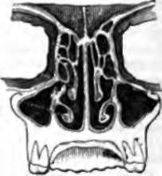

160. An Important Element In Delicacy Of Touch
Description
This section is from the book "Animal Physiology: The Structure And Functions Of The Human Body", by John Cleland. Also available from Amazon: Animal Physiology, the Structure and Functions of the Human Body.
160. An Important Element In Delicacy Of Touch
An Important Element In Delicacy Of Touch consists in the localization of the feeling excited by contact; and an attempt has been made to measure the degree of sensitiveness of different parts of the surface, by ascertaining how nearly two points, say the points of a pair of compasses, may be approached one to the other, and yet be distinguished as separate when simultaneously laid against the skin. Judged in this way, the tongue is more sensitive than the fingers, and the back has very little sensation. But if the student try the experiment for himself, he will find that this is a test simply of the power of localization of sensation, and that of the three parts mentioned, the back is the most acutely affected by a given amount of pressure; it is the part on which the pressure of a fine point most quickly causes pain. The reason of this is not very far to seek. The epidermis of the back is much thinner than that of either the tongue or the fingers, and therefore when an object touches it, the nerve-extremities are less protected. On the other hand, the nerve-extremities are far more numerous in the tongue and fingers, and a given irritation produces a slighter impression on a greater number of them. When the impressed condition of a nerve is carried to a certain pitch of intensity, pain is the result; but when a number of nerves are impressed in a slighter degree, increased information is obtained. Thus it happens that the back, with few nerves and comparatively thin skin, is highly sensitive, but a very poor tactile organ; while the fingers, with many nerves and thick cuticle, bear rougher usage without pain, at the same time that they are useful for touch.
A very common experiment illustrates that a distinction must be drawn between the localization of impressions on the surface of a touching organ, and the sense of the position of the organ, spoken of in a previous paragraph. If the middle finger be crossed over the back of the forefinger, and a pencil or a pea be placed between the tips of the two fingers, the sensation produced is not that of a single round object, but of two distinct objects; and if the eyes be shut, the illusion will be complete. The reason is, that while each finger conveys a correct tactile sensation, the mind fails to recognise the exact relative positions of the unusually placed tactile surfaces.
161. All the finer differences of touch disappear in pain. Heat, cold, chemical and mechanical irritation, all produce pain when applied in excess; and although the character of the pain varies with the nature of the damage done to texture, in no case is there any resemblance between the pain and the sensation caused by a minor degree of the stimulus.
Pain, then, may be considered as a sensation distinct from others, and resulting from an excess of the impressed condi-tion in a sensory nerve; indeed, it may be felt in parts which are not Otherwise endowed with feeling, as, for example, the stomach and intestines. Allied to it there are various other sensations, not belonging to any of the five senses, but which may be here alluded to. Among them are some which are pathological, such as numbness, arising from derangement of the conditions necessary for the normal activity of the nerves of any part, and giddiness and nausea, which owe their origin to deranged conditions within the brain. Hunger and thirst are more healthy sensations, which are of an exceedingly curious kind; for while the one is felt in the stomach, and the other in the throat, both are greatly dependent on the general state of nutrition of the body. Indigestible substances give only a very temporary relief from hunger, while, on the other hand, the stomach may be quite empty without the sensation existing; and thirst is only partially relieved by the mere contact of fluid with the fauces.
Fig. 109. Nasal Fossæ, transverse vertical section.
Continue to: